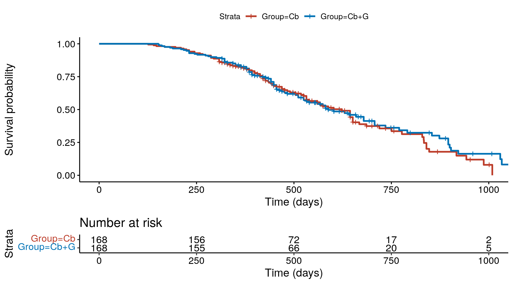
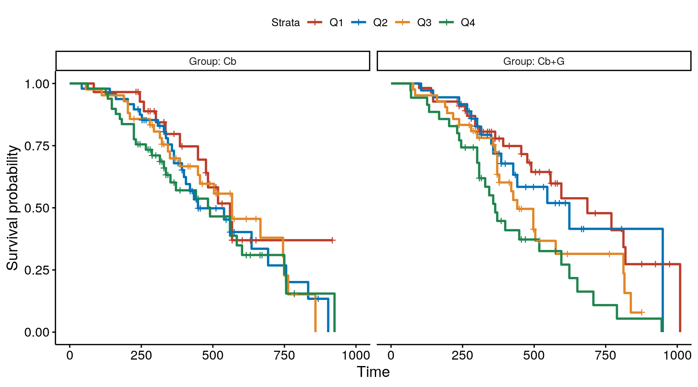
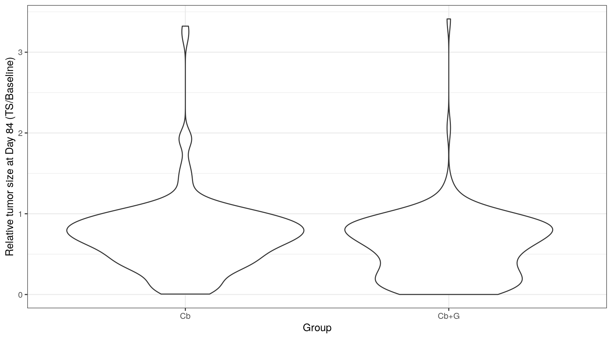
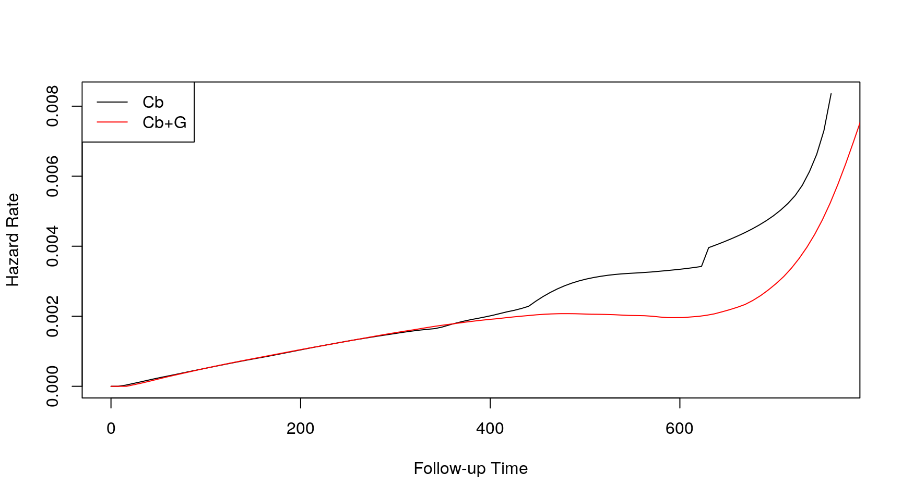
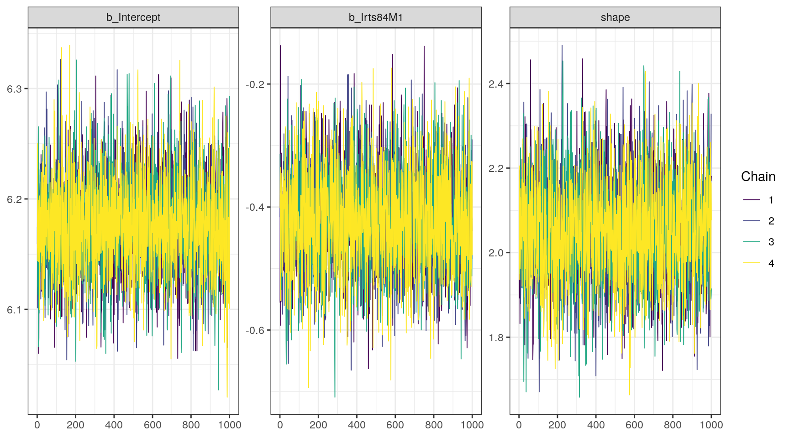
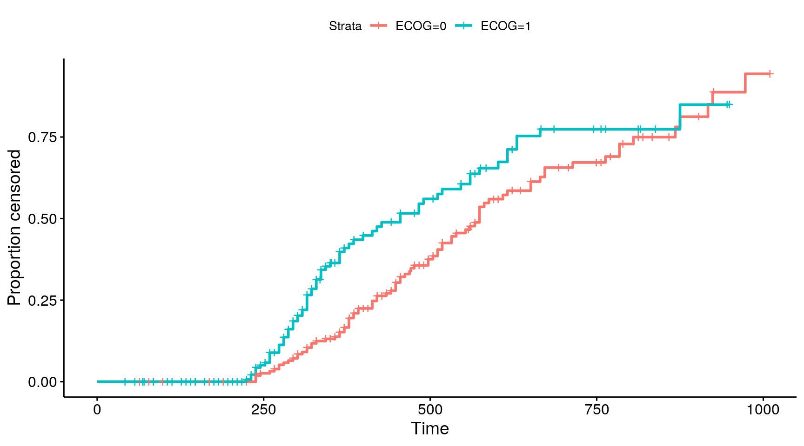
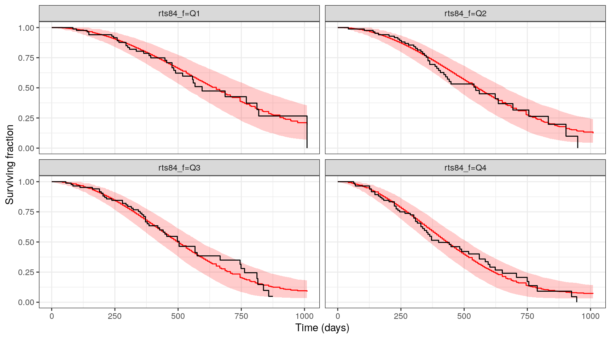
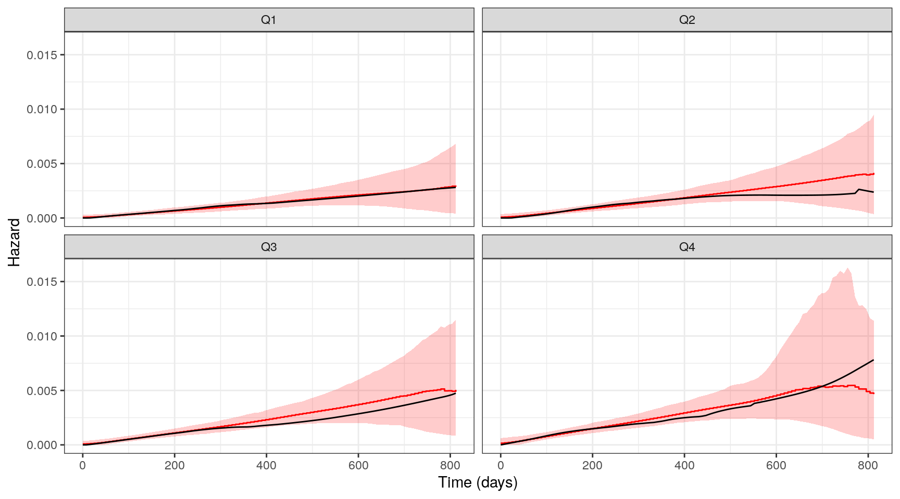

brms using parametric
modelsThere are two time-to-event processes happening:
With right censoring, we observe
We are trying to estimate the distribution of \(T\), but we observe \(T^*\)
Typical to assume that \(T\) and \(C\) are independent




TIME | cens(1-DV)weibull_prior <- c(prior(lognormal(0,3), class='shape'),
prior(normal(0,3), class='b'))
fit_weibull <- brm(TIME | cens(1-DV) ~ I(rts84-1),
data = dos84,
prior = weibull_prior,
family = weibull())The model is \[ \log \text{TIME}_i = \theta_0 + \theta_1 \times (RTS_i - 1) + \epsilon_i \] where \(\epsilon \sim \text{extreme value distribution}\)
\(\theta_0\) corresponds to the mean OS on the log scale when RTS=1 (\(\exp(\theta_0)\) is the median OS) \(\theta_1\) is the acceleration factor
. Family: weibull
. Links: mu = log; shape = identity
. Formula: TIME | cens(1 - DV) ~ I(rts84 - 1)
. Data: dos84 (Number of observations: 336)
. Draws: 4 chains, each with iter = 2000; warmup = 1000; thin = 1;
. total post-warmup draws = 4000
.
. Population-Level Effects:
. Estimate Est.Error l-95% CI u-95% CI Rhat Bulk_ESS Tail_ESS
. Intercept 6.18 0.04 6.10 6.27 1.00 4072 2905
. Irts84M1 -0.42 0.08 -0.57 -0.25 1.00 3595 3136
.
. Family Specific Parameters:
. Estimate Est.Error l-95% CI u-95% CI Rhat Bulk_ESS Tail_ESS
. shape 2.05 0.12 1.82 2.30 1.00 3132 2922
.
. Draws were sampled using sampling(NUTS). For each parameter, Bulk_ESS
. and Tail_ESS are effective sample size measures, and Rhat is the potential
. scale reduction factor on split chains (at convergence, Rhat = 1).
Remeber our recipe
weibull_sims <- add_predicted_draws(newdata = dos84 %>% select(ID, rts84, rts84_f, ECOG),
fit_weibull,
prediction = 'survival_time')| ID | rts84 | rts84_f | ECOG | .row | .draw | survival_time |
|---|---|---|---|---|---|---|
| 1 | 0.6293569 | Q2 | 1 | 1 | 1 | 76.39379 |
| 1 | 0.6293569 | Q2 | 1 | 1 | 2 | 1233.42194 |
| 1 | 0.6293569 | Q2 | 1 | 1 | 3 | 615.86647 |
| 1 | 0.6293569 | Q2 | 1 | 1 | 4 | 677.10051 |
| 1 | 0.6293569 | Q2 | 1 | 1 | 5 | 386.13813 |
| 1 | 0.6293569 | Q2 | 1 | 1 | 6 | 619.98205 |
These are simulations of \(T\).
To reflect the changing risk-set it is often advisable to also simulate censoring times to get to \(T^* = \min(T,C)\)
Kaplan-Meier estimator
Cox model
Parametric model
Do not use observed event times to censor simulated times

. Family: lognormal
. Links: mu = identity; sigma = identity
. Formula: TIME | cens(1 - DV) ~ ECOG
. Data: dos84 (Number of observations: 336)
. Draws: 4 chains, each with iter = 2000; warmup = 1000; thin = 1;
. total post-warmup draws = 4000
.
. Population-Level Effects:
. Estimate Est.Error l-95% CI u-95% CI Rhat Bulk_ESS Tail_ESS
. Intercept 6.41 0.06 6.29 6.54 1.00 3488 3073
. ECOG -0.41 0.08 -0.57 -0.24 1.00 3636 2769
.
. Family Specific Parameters:
. Estimate Est.Error l-95% CI u-95% CI Rhat Bulk_ESS Tail_ESS
. sigma 0.70 0.04 0.62 0.77 1.00 3434 2990
.
. Draws were sampled using sampling(NUTS). For each parameter, Bulk_ESS
. and Tail_ESS are effective sample size measures, and Rhat is the potential
. scale reduction factor on split chains (at convergence, Rhat = 1).censoring_sims <- add_predicted_draws(newdata = dos84 %>% select(ID, rts84, rts84_f, ECOG),
fit_censoring,
prediction = 'censoring_time')
event_sims <- weibull_sims %>% left_join(censoring_sims) %>%
mutate(event_time = pmin(survival_time, censoring_time),
delta = survival_time < censoring_time)| ID | rts84 | rts84_f | ECOG | .row | .draw | survival_time | censoring_time | event_time | delta |
|---|---|---|---|---|---|---|---|---|---|
| 1 | 0.6293569 | Q2 | 1 | 1 | 1 | 76.39379 | 302.1710 | 76.39379 | TRUE |
| 1 | 0.6293569 | Q2 | 1 | 1 | 2 | 1233.42194 | 531.7757 | 531.77571 | FALSE |
| 1 | 0.6293569 | Q2 | 1 | 1 | 3 | 615.86647 | 458.1059 | 458.10590 | FALSE |
| 1 | 0.6293569 | Q2 | 1 | 1 | 4 | 677.10051 | 630.9964 | 630.99645 | FALSE |
| 1 | 0.6293569 | Q2 | 1 | 1 | 5 | 386.13813 | 1004.3512 | 386.13813 | TRUE |
| 1 | 0.6293569 | Q2 | 1 | 1 | 6 | 619.98205 | 446.6518 | 446.65184 | FALSE |
Apply the summary statistic to each simulated dataset
sim_surv %>% group_by(pred_times, group) %>%
summarise(med=mean(preds),
lcl = quantile(preds,probs = 0.05),
ucl = quantile(preds, probs=0.95)) %>%
ggplot(aes(x=pred_times)) +
geom_step(aes(y=med), color='red') +
geom_ribbon(aes(ymin=lcl, ymax=ucl), fill='red', alpha=0.2) +
geom_step(data=obs_surv,aes(y=preds)) +
facet_wrap(~group) +
ylim(0,1) + labs(x='Time (days)', y='Surviving fraction')
vpc_stat_hazard <- function(.data, .maxtime=NULL) {
grid = seq(0,.maxtime, length=101)
if (!is.null(.maxtime)) {
fit <- with(.data, muhaz(time,event, min.time = 0, max.time = .maxtime))
} else {
fit <- with(.data, muhaz(time,event, min.time = 0))
}
# Impute at grid times in case muhaz uses different estimation points
# -- Impute NA if .maxtime is beyond last event time
haz = approx(x=fit$est.grid, y=fit$haz.est, xout=grid, rule=1)
data.frame(pred_times=grid, preds = haz$y)
}We will estimate the hazard until only 5% of subjects remain at risk.
obs_hazard = dos84 %>%
rename(time=TIME, event=DV) %>%
nest(data= -rts84_f) %>%
mutate(hazard = map(data, ~vpc_stat_hazard(.data=., .maxtime = endtime))) %>%
select(-data) %>%
unnest(hazard)Apply the summary statistic to each simulated dataset
sim_hazard %>%
group_by(pred_times, rts84_f) %>%
summarise(med=mean(preds, na.rm = TRUE),
lcl = quantile(preds,probs = 0.05, na.rm = TRUE),
ucl = quantile(preds, probs=0.95, na.rm = TRUE)) %>%
ggplot(aes(x=pred_times)) +
geom_step(aes(y=med), color='red') +
geom_ribbon(aes(ymin=lcl, ymax=ucl), fill='red', alpha=0.2) +
geom_line(data=obs_hazard,aes(y=preds)) +
facet_wrap(~rts84_f) +
labs(x='Time (days)', y='Hazard')
Using brms to fit and compare survival models.